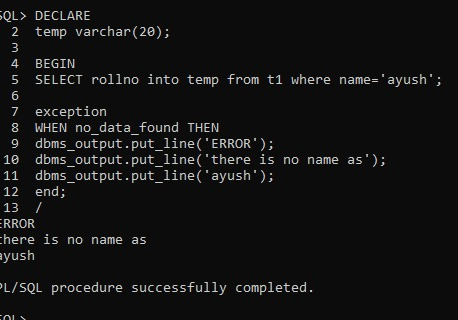

our bca practical is here
here you can see our programming

our bca practical is here
here you can see our programming
EXCEPTION HANDLING
An exception is an error which disrupts the normal flow of program instructions.
PL/SQL provides us the exception block which raises the exception thus helping the programmer to find out the fault and resolve it.
There are two types of exceptions defined in PL/SQL
User defined exception.
System defined exceptions.
Syntax to write an exception
WHEN exception THEN
statement;
Example

1. EXCEPTION HANDLING
example:
